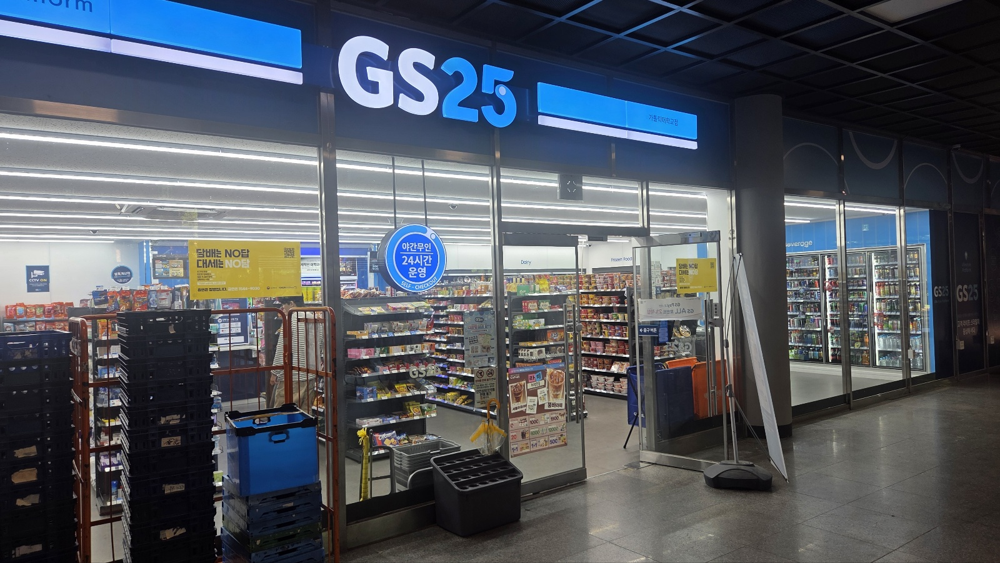
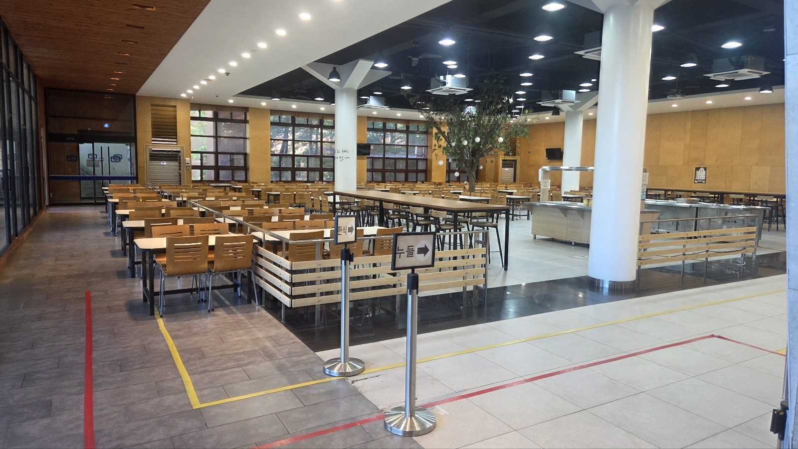
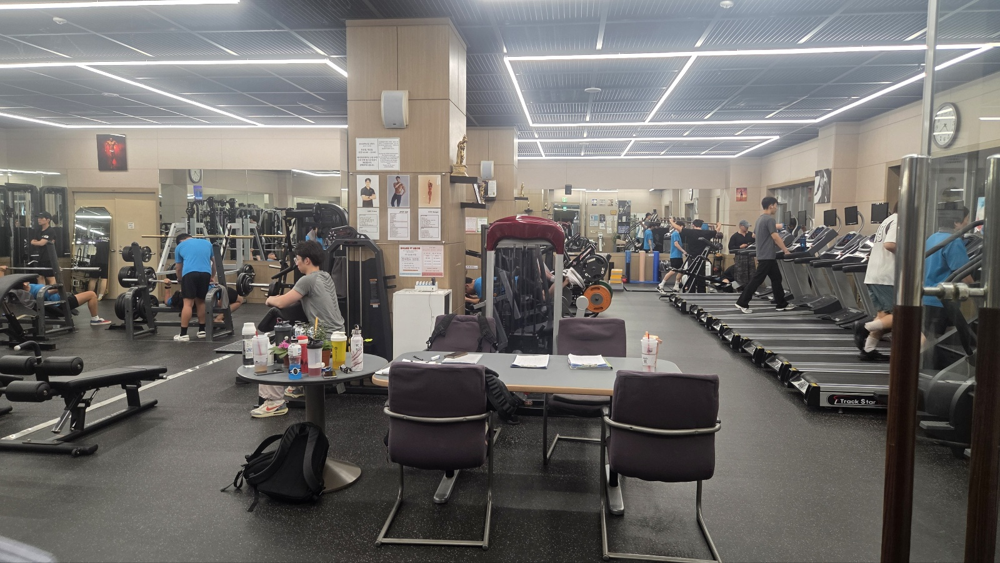

학관 1층 GS25 · 살 게 없어도 일단 들어가게 되는 곳

여기서 뭘 사겠다고 결심하고 가는 일은 거의 없다. 학관에 들어가면 발이 먼저 꺾인다. 1교시가 있는 날은 삼각김밥으로 아침을 때우고, 점심시간이 애매하게 잘린 날도 여기서 해결한다. 계획해서 오는 곳이 아니라 하루가 계획대로 안 풀렸을 때 오는 곳이다.
추천 이유
- 수업 건물에서 내려오는 길목이라 왕복 시간이 안 붙는다.
- 같은 건물 2층이 학생식당이라 아침·점심이 계단 한 층으로 이어진다.
학관 2층 학생식당 · 혼자 먹어도 아무도 신경 쓰지 않는 곳

여기서는 대부분 혼자 먹는다. 몇 번 와보니 주변 절반이 혼자였다. 맛 때문에 오는 곳은 아니다. 학교 밖 한 끼가 만 원을 훌쩍 넘는데 여기는 그 절반도 안 된다. 가성비가 이유라는 게 낭만적이지는 않지만, 그게 계속 오는 진짜 이유다.
추천 이유
- 혼밥이 기본값이라 눈치 볼 일이 없다.
- 편의점 바로 위층. 아침을 1층에서 때운 날 점심을 2층에서 먹으면 이동 거리가 계단 한 층이다.
교내 트러스트짐 · 밖에 있었으면 안 다녔을 헬스장

집 근처 헬스장을 끊었다가 오래 못 가고 그만둔 적이 있다. 집에 갔다가 옷 갈아입고 다시 나오는 그 한 단계가 매번 발목을 잡았다. 여기는 그 단계가 없다. 의지가 강해진 게 아니라 안 갈 핑계가 사라져서 계속하게 됐다.
추천 이유
- 수업 끝나고 그냥 걸어가면 도착한다. 거리가 습관을 만든다.
- 공강이 긴 날 오후에 오면 기구를 기다리지 않는다.